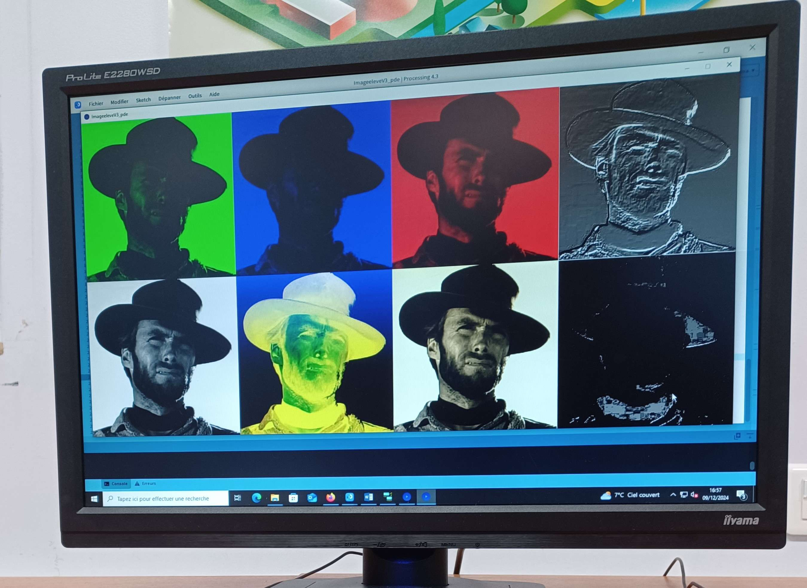
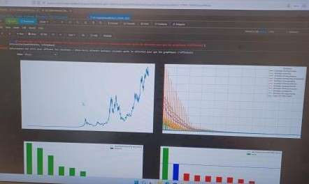
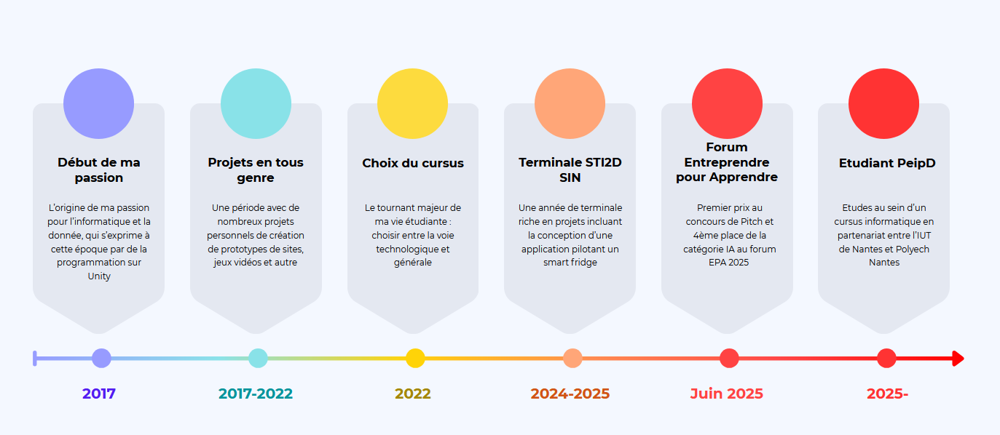

Jonathan Martin
Etudiant en informatique de 1ère année
Etudiant en informatique de 1ère année
Moi c'est Jonathan, je suis actuellement en première année de la formation Peip D à Nantes. Passionné par l'informatique depuis très jeune j'ai eu l'occasion de m'essayer à plusieurs technologies. Commençant par développer des jeux vidéos sur Unity en C# j'ai rapidement montré de l'intêret pour les langages de programmation orientés objets. Au fil de mon parcours, j'ai eu la chance de découvrir la science des données qui est le domaine dans lequel j'envisage aujourd'hui de faire carrière. Que ca soit à travers des analyses simples via pandas et matplotlib à l'expérimentation avec Pytorch, je ne cesse d'être intrigué par cette science.
Plein d'énergie
Que ce soit pour me lancer dans de nouveaux projets ou faire face à de nouveaux challenges, je suis toujours plein d'énergie !
Passionné et motivé
Passionné d'informatique, je suis prêt à me donner a fond pour mener mes projets à bien.
Polyvalent
Quelque soit la technologie je saurai me montrer utile et apprendre si nécessaire !

Passez la souris sur les vignettes pour plus d'informations et cliquez pour explorer les projets !






{kind=link}